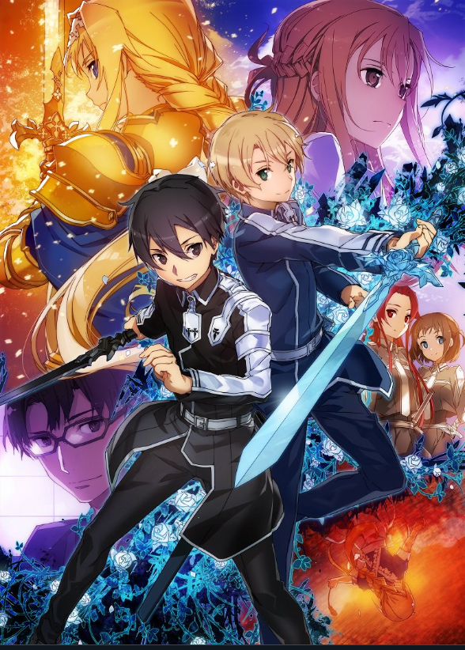

Sword Art Online
SAO:LORE 
Sword art online (SAO) is a japanese anime/manga within sub genre of fantasy called isekai meaning otherworld/different world. The anime is based in 2016-2022 near future that centres about a young boy named Kazuto Kirigaya that goes by Kirito in game. In 2016 Kirito is at the age of 8 and is tired of being forced to train in the martial art, kendo. As a result of this his grandfather gives him a beating for quitting, following that kirito's adopted sister, Sugha, takes it upon herself to undergo intense kendo training to avoid the same faith as kirito. With his athletics and martial arts training out of his life Kirito's intrest in computers increases. Fast forwarding 5 years the world is about to change, with the debut of a new VR headset called NerveGear developed by Akihiko Kayayba. It's a remarkable piece of VR technology which allows users to experience high quality graphichs and linkage of your nerves to the game. In May of 2022 NerveGear launches openly and everything is running succesfully except for the fact that there is a secret mode that exists that prevents users from removing the NerveGear, if they do so by force they result in dying in real life via the Nerve Gear destroying the users brain, the only alternative to succesfully removing the NerveGear and exiting the game is to clear all the 100 floors of the huge floating castle Aincrad.
As Kirito has isolated himslef from the real world he thinks of himself as the most ideal beta tester for the game and dives in and becomes a virtual swordsman in the game Sword Art Online. Within a few hours of playing, players in the game discover that there is no way to logout of the game, their appearances in-game change to how they look in real life and they all get an announcement from Akihiko Kayaba stating that he is now in control of the world and that the missing logout button from the main menus is not a defect in the game. Kayaba(who we later know as Heathcliff) then proceeds to say that this is how sao was designed to be and if anyone trys to remove the NerveGear from your head a transmitter inside the NerveGear will discharge a microwave signal into your skull destroying your brain and ending your life. Kirito and friends must adapt to their new reality and for their survival and hopefully break out from their virtual hell.


Main characters
- Kirito
- Asuna
- Alice
- Eugeo
- Sinon
- Klein
- Heathcliff
- Sugou Nobuyuiki
Other characters
- Yuuki
- Leafa
- Silica
The latest SAO anime is Sword Art Online: Alicization - War of Underwold, it consists of two amazing seasons that paved the way for other characters to shine and left the paralyzed Kirito as a secondary character. A sense of excitement arises as fans await the release of Sword Art Online Progressive: Aria of a Starless Night that releases December 10, 2021 for people in the UK and Ireland. The trailer for the movie (available in subbed and dubbed) has been released earlier this year and has set the suspense high for viewers.